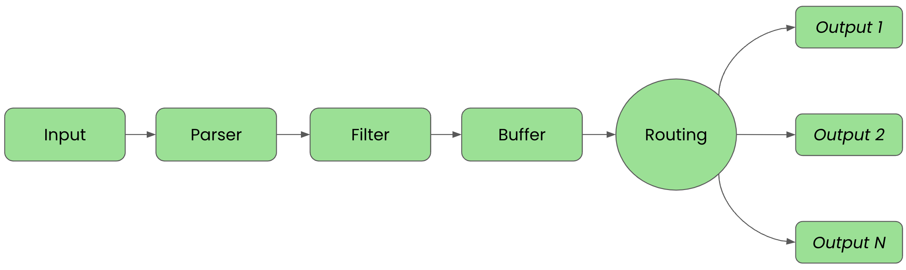

Lab 3 – Exploring first pipelines
Lab Goal
To explore first telemetry pipelines using Fluent Bit by creating three telemetry pipelines; first a simple one with input and output phases and routing to a single destination, second by refining to include output to several destinations based on routing rules, and a third that configures the filtering phase to remove unused data from our incoming events.
Intermezzo – Jumping to the solution
If you happen to be exploring Fluent Bit as an architect and want to jump to the solution in
action, we've included the configuration files in the easy installation project from the source
installation support directory. Please see the previous installing from source lab. Instead of creating all
the configurations as shown in this lab, you'll find them
ready to use as shown below from the
fluentbit-install-demo root directory:
$ ls -l support/configs-lab-3/
-rw-r--r--@ 1 erics staff 158B Jul 21 12:55 Buildfile
-rw-r--r--@ 1 erics staff 1.7K Jul 21 18:34 workshop-fb-helm.yaml
-rw-r--r--@ 1 erics staff 1.4K May 5 16:18 workshop-fb.yaml
First pipelines - Configuration setup
We've installed Fluent Bit, either from source or in a container, and are ready to start setting
up our first telemetry pipelines. To do that, we need to go back and remember the phases that
make up our pipeline. To get started we need to define our
INPUT and
OUTPUT pipeline phases.

First pipelines – Creating a workshop configuration
Create a new directory
workshop-fluentbit where we will store the first
pipeline configuration file:
# Create a workshop directory.
#
$ mkdir workshop-fluentbit
# Create file for centralized configuration.
$ touch workshop-fluentbit/workshop-fb.yaml
First pipelines – Configuring first inputs
In our workshop directory
workshop-fluentbit, let's start by opening the
workshop-fb.yaml file in our favorite editor and add two input
configurations, one to generate test INFO level log messages using the provided
dummy input plugin and one to generate ERROR level log messages:
# This file is our workshop Fluent Bit configuration.
#
service:
flush: 1
log_level: info
pipeline:
inputs:
# This entry generates a test INFO log level message and tags it.
- name: dummy
tag: workshop.info
dummy: '{"message":"This is workshop INFO message", "level":"INFO", "color": "yellow"}'
# This entry generates a test ERROR log level message and tags it.
- name: dummy
tag: workshop.error
dummy: '{"message":"This is workshop ERROR message", "level":"ERROR", "color": "red"}'
First pipelines – Breaking down input configuration
Explore the
Our configuration is tagging each INFO level event with
dummy input plugin documentation
for all the details, but this plugin generates fake events on set intervals, 1 second by
default. There are three keys used to set up our inputs:- Name – the name of the plugin to be used.
- Tag – the tag we assign, can be anything, to help find events of this type in the matching phase.
- Dummy – Where the exact event output can be defined. By default, it just prints
{ "message" : "dummy"}.
Our configuration is tagging each INFO level event with
workshop.info
and ERROR level event with workshop.error. The configuration also overrides
the default "dummy" message with custom event text.
First pipelines – Configuring first outputs
Now let's create a new output configuration by adding the following code below our INPUTS
sections. Note the format is set to provide JSON in the console output. Save the file when done:
outputs:
# This entry directs all tags (it matches any we encounter) to
# print to standard output, which is our console.
- name: stdout
match: '*'
format: json_lines
First pipelines – Running first pipeline (source)
To see if our configuration works we can test run it with our Fluent Bit installation. Depending
on the chosen install method, here we show how to run it using the source installation followed
by the container version. Below the source installation is shown from the directory we created to hold
all our configuration files:
# source install.
#
$ [PATH_TO]/fluent-bit --config workshop-fb.yaml
First pipelines – Console output first pipeline (source)
The console output should look something like this, noting that we've cut out the ASCII logo
at startup. Note the alternating generated event lines with INFO and ERROR messages that run
until exiting with CTRL_C:
...
[2025/07/09 17:08:28] [ info] [input:dummy:dummy.0] initializing
[2025/07/09 17:08:28] [ info] [input:dummy:dummy.0] storage_strategy='memory' (memory only)
[2025/07/09 17:08:28] [ info] [input:dummy:dummy.1] initializing
[2025/07/09 17:08:28] [ info] [input:dummy:dummy.1] storage_strategy='memory' (memory only)
[2025/07/09 17:08:28] [ info] [output:stdout:stdout.0] worker #0 started
[2025/07/09 17:08:28] [ info] [sp] stream processor started
[2025/07/09 17:08:28] [ info] [engine] Shutdown Grace Period=5, Shutdown Input Grace Period=2
{"date":1722419266.712218,"message":"This is workshop INFO message","level":"INFO","color":"yellow"}
{"date":1722419266.712724,"message":"This is workshop ERROR message","level":"ERROR","color":"red"}
{"date":1722419267.713068,"message":"This is workshop INFO message","level":"INFO","color":"yellow"}
{"date":1722419267.713238,"message":"This is workshop ERROR message","level":"ERROR","color":"red"}
...
First pipelines – Testing first pipeline (container)
Now if we are using containers, we can test the configuration by running it with our Fluent Bit
installation. First thing that is needed is to open in our favorite editor, a new file called
Buildfile. This is going to be used to build a new container image and insert
our configuration. Note this file needs to be in the same directory as your configuration,
otherwise adjust the file path names:
FROM ghcr.io/fluent/fluent-bit:5.1.1
COPY ./workshop-fb.yaml /fluent-bit/etc/workshop-fb.yaml
CMD [ "fluent-bit", "-c", "/fluent-bit/etc/workshop-fb.yaml"]
First pipelines – Building first pipeline (container)
Now we'll build a new container image, naming it with a version tag, as follows using the
Buildfile and assuming you are in the same directory:
$ podman build -t workshop-fb:v1 -f Buildfile
STEP 1/3: FROM ghcr.io/fluent/fluent-bit:5.1.1
STEP 2/3: COPY ./workshop-fb.yaml /fluent-bit/etc/workshop-fb.yaml
--> c1ec8d924936
STEP 3/3: CMD [ "fluent-bit", "-c", "/fluent-bit/etc/workshop-fb.yaml"]
COMMIT workshop-fb:v1
--> aa945dcb6a4c
Successfully tagged localhost/workshop-fb:v1
aa945dcb6a4cea87a26080b814c2b4a522c4f1e84e9a52a0e4e4491630a4b503
First pipelines – Running first pipeline (container)
Now we'll run our new container image:
$ podman run --rm --name fb workshop-fb:v1
First pipelines – Console output first pipeline (container)
The console output should look something like this, noting that we've cut out the ASCII logo
at startup. Note the alternating generated event lines with INFO and ERROR messages that run
until exiting with CTRL_C:
...
[2025/07/09 15:10:32] [ info] [input:dummy:dummy.0] initializing
[2025/07/09 15:10:32] [ info] [input:dummy:dummy.0] storage_strategy='memory' (memory only)
[2025/07/09 15:10:32] [ info] [input:dummy:dummy.1] initializing
[2025/07/09 15:10:32] [ info] [input:dummy:dummy.1] storage_strategy='memory' (memory only)
[2025/07/09 15:10:32] [ info] [sp] stream processor started
[2025/07/09 15:10:32] [ info] [output:stdout:stdout.0] worker #0 started
[2025/07/09 15:10:32] [ info] [engine] Shutdown Grace Period=5, Shutdown Input Grace Period=2
{"date":1722424433.480621,"message":"This is workshop INFO message","level":"INFO","color":"yellow"}
{"date":1722424433.480725,"message":"This is workshop ERROR message","level":"ERROR","color":"red"}
{"date":1722424434.478095,"message":"This is workshop INFO message","level":"INFO","color":"yellow"}
{"date":1722424434.478199,"message":"This is workshop ERROR message","level":"ERROR","color":"red"}
...
First pipelines – Updating running pipeline (k3s)
If you deployed onto Kubernetes (k3s) with Rancher Desktop, Fluent Bit is already running, configured
by the Helm chart values file
support/fluent-bit-helm.yaml. We need to update the
running configuration by editing creating a new pipeline config file workshop-fb-helm.yaml
to hold our first pipeline, then roll it out with a helm upgrade, so create the file
starting with the service section as follows:
args:
- --workdir=/fluent-bit/etc
- --config=/fluent-bit/etc/conf/fluent-bit.yaml
config:
extraFiles:
fluent-bit.yaml: |
service:
flush: 1
log_level: info
http_server: on
http_listen: 0.0.0.0
http_port: 2020
First pipelines – Why the HTTP server matters (k3s)
Those last three lines are not optional on Kubernetes. The Helm chart configures a
livenessProbe that polls port 2020, and our
extraFiles config replaces the chart's default
service section. Leave http_server out and nothing
listens on that port, so every probe fails and the kubelet kills the pod after roughly 30
seconds, over and over:
NAME READY STATUS RESTARTS
fluent-bit-4k9dt 0/1 CrashLoopBackOff 4
This one is worth remembering because it hides well: Fluent Bit starts cleanly, logs no
errors, and exits with status
Completed. The pipeline is fine, the pod
is simply being terminated from the outside.
First pipelines – Updating running pipeline (k3s) cont.
Continuing in the same file, add our first pipeline below the service section:
pipeline:
inputs:
# This entry generates a test INFO log level message and tags it.
- name: dummy
tag: workshop.info
dummy: '{"message":"This is workshop INFO message", "level":"INFO", "color": "yellow"}'
# This entry generates a test ERROR log level message and tags it.
- name: dummy
tag: workshop.error
dummy: '{"message":"This is workshop ERROR message", "level":"ERROR", "color": "red"}'
outputs:
# This entry directs all tags to the console (pod stdout).
- name: stdout
match: '*'
format: json_lines
First pipelines – Rolling out new configuration (k3s)
Apply the updated configuration by running a
helm upgrade from the
fluentbit-install-demo root directory. This rolls out a new Fluent Bit pod
picking up our first pipeline:
$ helm --kube-context rancher-desktop upgrade --install fluent-bit fluent/fluent-bit \
--set image.tag=5.1.1 \
--namespace logging --create-namespace \
--values workshop-fb-helm.yaml
Release "fluent-bit" has been upgraded. Happy Helming!
NAME: fluent-bit
LAST DEPLOYED: Tue Jul 21 14:52:06 2026
NAMESPACE: logging
STATUS: deployed
REVISION: 2
DESCRIPTION: Upgrade complete
NOTES:
Get Fluent Bit build information by running these commands:
export POD_NAME=$(kubectl get pods --namespace logging -l "app.kubernetes.io/name=fluent-bit,app.kubernetes.io/instance=fluent-bit" -o jsonpath="{.items[0].metadata.name}")
kubectl --namespace logging port-forward $POD_NAME 2020:2020
curl http://127.0.0.1:2020
First pipelines – Console output first pipeline (k3s)
Since our output plugin is
stdout, the events are written to the Fluent Bit
pod's console. View them by following the pod logs in the logging namespace,
noting the alternating INFO and ERROR messages (exit with CTRL-C):
$ kubectl --context rancher-desktop -n logging logs -l app.kubernetes.io/name=fluent-bit -f
...
{"date":1722419266.712218,"message":"This is workshop INFO message","level":"INFO","color":"yellow"}
{"date":1722419266.712724,"message":"This is workshop ERROR message","level":"ERROR","color":"red"}
{"date":1722419267.713068,"message":"This is workshop INFO message","level":"INFO","color":"yellow"}
{"date":1722419267.713238,"message":"This is workshop ERROR message","level":"ERROR","color":"red"}
...
First pipelines – Examining solution phases (input)
Let's review our solution by walking through Fluent Bit's pipeline phases, as discussed in
lab 1. Our input phase defined where we were getting
our data from to feed the pipeline, in our case using a dummy plugin to generate two events
every second:
pipeline:
inputs:
# This entry generates a test INFO log level message and tags it for the workshop.
- name: dummy
tag: workshop.info
dummy: '{"message":"This is workshop INFO message", "level":"INFO", "color": "yellow"}'
# This entry generates a test ERROR log level message and tags it for the workshop.
- name: dummy
tag: workshop.error
dummy: '{"message":"This is workshop ERROR message", "level":"ERROR", "color": "red"}'

First pipelines – Examining solution phases (parser)
Our first pipeline does not make use of a parser phase, as there is no need yet for our
incoming data to be put in a structured format.

First pipelines – Examining solution phases (filter)
Our first pipeline uses the filtering phase to match tags for eventual modifying, enriching, or
deleting of
Events. Up to now it's a basic match on all events, so
simple filtering:
# This entry directs all tags (it matches any we encounter) to
# print to standard output, which is our console.
outputs:
- name: stdout
match: '*' <<<<<< Filtering phase.
format: json_lines

First pipelines – Examining solution phases (buffer)
Buffering in our first pipeline started with in-memory and does not yet make use of file-system-based options.

First pipelines – Examining solution phases (routing)
Our first pipeline uses the assigned
Tag and Match
configurations found in the outputs.conf file to determine which
output destinations to send data. Ours is simply sending all tagged events to the standard
output (console):
# This entry directs all tags (it matches any we encounter) to
# print to standard output, which is our console.
outputs:
- name: stdout <<<<< Routing phase based on matching.
match: '*' <<<<< in this case, all tags.
format: json_lines

First pipelines – Examining solution phases (output)
The final phase is
OUTPUT, which is where Fluent Bit uses
Finally, our solution is using the standard output plugin to dump all matched events to the
console. Later you'll see other ways to configure outputs:
# This entry directs all tags (it matches any we encounter) to
# print to standard output, which is our console.
outputs:
- name: stdout <<<<< Output phase / destination.
match: '*'
format: json_lines

First pipeline completed!
First pipelines – Adding routing for new outputs
For our second pipeline, we're going to expand our routing and output phases using the existing
generated input events. To do that, we just need to add two new output sections to our
configuration file
We want to use a new output plugin called
Let's see how we can update our
workshop-fb.yaml.We want to use a new output plugin called
File, and have this route all events with the tag *.info
to a file: /tmp/workshop-INFO.log. We are also going to configure another
section to route all events with the tag *.error to a different file:
/tmp/workshop-INFO.logLet's see how we can update our
workshop-fb.yaml file on the next slide.
First pipelines – Adding new outputs
To add the new routing and outputs, we add two new output sections to our configuration file
workshop-fb.yaml as follows (leave existing stdout for console). This
should send every event generated to the console, and fill two files with only messages indicated:
...
outputs:
# This entry directs all tags (it matches any we encounter) to
# print to standard output, which is our console.
- name: stdout
match: '*'
format: json_lines
# This entry directs all INFO level events to its own log file.
- name: file
file: /tmp/workshop-INFO.log
match: '*.info'
# This entry directs all error level events to its own log file.
- name: file
file: /tmp/workshop-ERROR.log
match: '*.error'
First pipelines – Running the second pipeline (source)
To see if our configuration works we can test run it with our Fluent Bit installation, first
using the source installation followed by the container version. Below the source installation is
shown from the directory we created to hold all our configuration files:
# source install.
#
$ [PATH_TO]/fluent-bit --config workshop-fb.yaml
First pipelines – Console output second pipeline (source)
The console output should look something like this, noting the same full output of alternating
generated event lines with INFO and ERROR messages that run until exiting with CTRL_C:
...
[2025/07/09 17:21:49] [ info] [input:dummy:dummy.0] initializing
[2025/07/09 17:21:49] [ info] [input:dummy:dummy.0] storage_strategy='memory' (memory only)
[2025/07/09 17:21:49] [ info] [input:dummy:dummy.1] initializing
[2025/07/09 17:21:49] [ info] [input:dummy:dummy.1] storage_strategy='memory' (memory only)
[2025/07/09 17:21:49] [ info] [output:stdout:stdout.0] worker #0 started
[2025/07/09 17:21:49] [ info] [output:file:file.1] worker #0 started
[2025/07/09 17:21:49] [ info] [output:file:file.2] worker #0 started
[2025/07/09 17:21:49] [ info] [sp] stream processor started
[2025/07/09 17:21:49] [ info] [engine] Shutdown Grace Period=5, Shutdown Input Grace Period=2
{"date":1722425121.204232,"message":"This is workshop INFO message","level":"INFO","color":"yellow"}
{"date":1722425121.206307,"message":"This is workshop ERROR message","level":"ERROR","color":"red"}
{"date":1722425122.203805,"message":"This is workshop INFO message","level":"INFO","color":"yellow"}
{"date":1722425122.203966,"message":"This is workshop ERROR message","level":"ERROR","color":"red"}
{"date":1722425123.200998,"message":"This is workshop INFO message","level":"INFO","color":"yellow"}
{"date":1722425123.201261,"message":"This is workshop ERROR message","level":"ERROR","color":"red"}
...
First pipelines – File output second pipeline (source)
The file output for
workshop-INFO.log should contain only the generated event
lines with INFO messages, and the workshop-ERROR.log the ERROR messages that
ran until exiting with CTRL_C:
$ cat /tmp/workshop-INFO.log
workshop.info: [1722425527.482558656, {"message":"This is workshop INFO message","level":"INFO","color":"yellow"}]
workshop.info: [1722425528.477954438, {"message":"This is workshop INFO message","level":"INFO","color":"yellow"}]
workshop.info: [1722425529.482211387, {"message":"This is workshop INFO message","level":"INFO","color":"yellow"}]
...
$ cat /tmp/workshop-ERROR.log
workshop.error: [1722425527.482744241, {"message":"This is workshop ERROR message","level":"ERROR","color":"red"}]
workshop.error: [1722425528.478069646, {"message":"This is workshop ERROR message","level":"ERROR","color":"red"}]
workshop.error: [1722425529.482277679, {"message":"This is workshop ERROR message","level":"ERROR","color":"red"}]
...
First pipelines – Testing second pipeline (container)
To test with a container, we need to rebuild a new container image, naming it with a new version
tag, as follows using the
Buildfile and assuming you are in the same
directory:
$ podman build -t workshop-fb:v2 -f Buildfile
STEP 1/3: FROM ghcr.io/fluent/fluent-bit:5.1.1
STEP 2/3: COPY ./workshop-fb.yaml /fluent-bit/etc/workshop-fb.yaml
--> 2d945d632b0c
STEP 3/3: CMD [ "fluent-bit", "-c", "/fluent-bit/etc/workshop-fb.yaml"]
COMMIT workshop-fb:v2
--> e1130e1e48cf
Successfully tagged localhost/workshop-fb:v2
e1130e1e48cf730bef63535af02cf4bdcd8f6eb1938dd8a892ba103ad935fc92
First pipelines – Running second pipeline (container)
Now we'll run our new container image, but we need a way for the container to write to the two
log files so that we can check them (not internally on the container filesystem). We mount our
local workshop directory to the containers tmp directory so we can see the files on our local
machine as follows:
$ podman run --rm --name fb -v ./:/tmp workshop-fb:v2
First pipelines – Console output second pipeline (container)
The container console output should look something like this, noting the same full output of
alternating generated event lines with INFO and ERROR messages that run until exiting with
CTRL_C:
...
[2025/07/09 15:24:00] [ info] [input:dummy:dummy.0] initializing
[2025/07/09 15:24:00] [ info] [input:dummy:dummy.0] storage_strategy='memory' (memory only)
[2025/07/09 15:24:00] [ info] [input:dummy:dummy.1] initializing
[2025/07/09 15:24:00] [ info] [input:dummy:dummy.1] storage_strategy='memory' (memory only)
[2025/07/09 15:24:00] [ info] [output:stdout:stdout.0] worker #0 started
[2025/07/09 15:24:00] [ info] [output:file:file.1] worker #0 started
[2025/07/09 15:24:00] [ info] [output:file:file.2] worker #0 started
[2025/07/09 15:24:00] [ info] [sp] stream processor started
[2025/07/09 15:24:00] [ info] [engine] Shutdown Grace Period=5, Shutdown Input Grace Period=2
{"date":1722425121.204232,"message":"This is workshop INFO message","level":"INFO","color":"yellow"}
{"date":1722425121.206307,"message":"This is workshop ERROR message","level":"ERROR","color":"red"}
{"date":1722425122.203805,"message":"This is workshop INFO message","level":"INFO","color":"yellow"}
{"date":1722425122.203966,"message":"This is workshop ERROR message","level":"ERROR","color":"red"}
{"date":1722425123.200998,"message":"This is workshop INFO message","level":"INFO","color":"yellow"}
{"date":1722425123.201261,"message":"This is workshop ERROR message","level":"ERROR","color":"red"}
...
First pipelines – File output second pipeline (container)
Due to mounting the local file system to the container, if you check your current directory, you
will find the file output for
workshop-INFO.log and
workshop-ERROR.log. Validate that they contain the right events as follows:
$ cat workshop-INFO.log
workshop.info: [1722425527.482558656, {"message":"This is workshop INFO message","level":"INFO","color":"yellow"}]
workshop.info: [1722425528.477954438, {"message":"This is workshop INFO message","level":"INFO","color":"yellow"}]
workshop.info: [1722425529.482211387, {"message":"This is workshop INFO message","level":"INFO","color":"yellow"}]
...
$ cat workshop-ERROR.log
workshop.error: [1722425527.482744241, {"message":"This is workshop ERROR message","level":"ERROR","color":"red"}]
workshop.error: [1722425528.478069646, {"message":"This is workshop ERROR message","level":"ERROR","color":"red"}]
workshop.error: [1722425529.482277679, {"message":"This is workshop ERROR message","level":"ERROR","color":"red"}]
...
First pipelines – Adding file outputs (k3s)
On Kubernetes there is no bind mount like the container's
-v ./:/tmp, so the
file outputs write to the Fluent Bit pod's own filesystem. Add the same two file
outputs to the outputs section of our workshop-fb-helm.yaml
(keep the existing stdout), then roll it out with a helm upgrade:
outputs:
# This entry directs all tags to the console (pod stdout).
- name: stdout
match: '*'
format: json_lines
# This entry directs all INFO level events to its own log file.
- name: file
file: /tmp/workshop-INFO.log
match: '*.info'
# This entry directs all error level events to its own log file.
- name: file
file: /tmp/workshop-ERROR.log
match: '*.error'
First pipelines – Rolling out second pipeline (k3s)
Apply the updated configuration with another
helm upgrade from the
fluentbit-install-demo root directory, rolling out a new Fluent Bit pod that
picks up our second pipeline:
$ helm --kube-context rancher-desktop upgrade --install fluent-bit fluent/fluent-bit \
--set image.tag=5.1.1 \
--namespace logging --create-namespace \
--values workshop-fb-helm.yaml
Release "fluent-bit" has been upgraded. Happy Helming!
NAME: fluent-bit
NAMESPACE: logging
STATUS: deployed
REVISION: 3
First pipelines – File output second pipeline (k3s)
The routed files live inside the pod at
/tmp, but the Fluent Bit image is
distro-less: it has no shell and no cat, ls, or
tar, so kubectl exec ... -- cat and kubectl cp
both fail with executable file not found. Instead, attach a
busybox debug container that shares Fluent Bit's PID namespace and read the
files through its root filesystem:
$ POD=$(kubectl --context rancher-desktop -n logging get pod \
-l app.kubernetes.io/name=fluent-bit -o jsonpath='{.items[0].metadata.name}')
$ kubectl --context rancher-desktop -n logging debug $POD \
--image=busybox --target=fluent-bit -it -- sh
# Fluent Bit runs as PID 1, so its root filesystem is at /proc/1/root:
$ cat /proc/1/root/tmp/workshop-INFO.log
workshop.info: [1722425527.482558656, {"message":"This is workshop INFO message","level":"INFO","color":"yellow"}]
workshop.info: [1722425528.477954438, {"message":"This is workshop INFO message","level":"INFO","color":"yellow"}]
...
$ cat /proc/1/root/tmp/workshop-ERROR.log
workshop.error: [1722425527.482744241, {"message":"This is workshop ERROR message","level":"ERROR","color":"red"}]
...
--target=fluent-bit shares the pod's PID namespace so Fluent Bit is reachable as
PID 1, and BusyBox supplies the cat/ls/tail
the distro-less image lacks.
Second pipeline completed!
First pipelines – Adding filtering to the mix
For our third pipeline, we're going to add to the filtering phase using the existing generated
input events to drop a key value. To do that, we are adding a new filter section to our
pipeline section in our configuration file
We are going to remove the
Let's see how we can update our
workshop-fb.yaml.We are going to remove the
color key from all events using a filter plugin
called Modify. This filter will apply to all incoming events and remove the
key color if it exists.Let's see how we can update our
workshop-fb.yaml configuration file on the
next slide.
First pipelines – Adding new filters configuration
Open our configuration file
workshop-fb.yaml and add a filters
section after the last inputs section as follows:
inputs:
...
# This entry generates a test ERROR log level message and tags it.
- name: dummy
tag: workshop.error
dummy: '{"message":"This is workshop ERROR message", "level":"ERROR", "color": "red"}'
filters:
# This filter is applied to all events and removes the key 'color' if it exists.
- name: modify
match: '*'
remove: color
First pipelines – Running the third pipeline (source)
To see if our configuration works we can test run it with our Fluent Bit installation, first
using the source installation followed by the container version. Below the source installation is
shown from the directory we created to hold all our configuration files:
# source install.
#
$ [PATH_TO]/fluent-bit --config workshop-fb.yaml
First pipelines – Console output third pipeline (source)
The console output should look something like this, noting the same full output of alternating
generated event lines with INFO and ERROR messages that run until exiting with CTRL_C. Note the
color key and value pair has been removed:
...
[2025/07/09 15:24:00] [ info] [input:dummy:dummy.0] initializing
[2025/07/09 15:24:00] [ info] [input:dummy:dummy.0] storage_strategy='memory' (memory only)
[2025/07/09 15:24:00] [ info] [input:dummy:dummy.1] initializing
[2025/07/09 15:24:00] [ info] [input:dummy:dummy.1] storage_strategy='memory' (memory only)
[2025/07/09 15:24:00] [ info] [output:stdout:stdout.0] worker #0 started
[2025/07/09 15:24:00] [ info] [output:file:file.1] worker #0 started
[2025/07/09 15:24:00] [ info] [output:file:file.2] worker #0 started
[2025/07/09 15:24:00] [ info] [sp] stream processor started
[2025/07/09 15:24:00] [ info] [engine] Shutdown Grace Period=5, Shutdown Input Grace Period=2
{"date":1722426324.033251,"message":"This is workshop INFO message","level":"INFO"}
{"date":1722426324.043854,"message":"This is workshop ERROR message","level":"ERROR"}
{"date":1722426325.036876,"message":"This is workshop INFO message","level":"INFO"}
{"date":1722426325.037228,"message":"This is workshop ERROR message","level":"ERROR"}
{"date":1722426326.034123,"message":"This is workshop INFO message","level":"INFO"}
{"date":1722426326.034346,"message":"This is workshop ERROR message","level":"ERROR"}
...
First pipelines – File output third pipeline (source)
The file output for
workshop-INFO.log should contain only the generated event
lines with INFO messages, and the workshop-ERROR.log the ERROR messages
without the color key and value pairs:
$ cat /tmp/workshop-INFO.log
workshop.info: [1722426324.033251000, {"message":"This is workshop INFO message","level":"INFO"}]
workshop.info: [1722426325.036876000, {"message":"This is workshop INFO message","level":"INFO"}]
workshop.info: [1722426326.034123000, {"message":"This is workshop INFO message","level":"INFO"}]
...
$ cat /tmp/workshop-ERROR.log
workshop.error: [1722426324.043854000, {"message":"This is workshop ERROR message","level":"ERROR"}]
workshop.error: [1722426325.037228000, {"message":"This is workshop ERROR message","level":"ERROR"}]
workshop.error: [1722426326.034346000, {"message":"This is workshop ERROR message","level":"ERROR"}]
...
First pipelines – Building the third pipeline (container)
Using the same
Buildfile, rebuild a new container image giving it a new
version tag, as follows:
$ podman build -t workshop-fb:v3 -f Buildfile
STEP 1/3: FROM ghcr.io/fluent/fluent-bit:5.1.1
STEP 2/3: COPY ./workshop-fb.yaml /fluent-bit/etc/workshop-fb.yaml
--> 3408ca405de9
STEP 3/3: CMD [ "fluent-bit", "-c", "/fluent-bit/etc/workshop-fb.yaml"]
COMMIT workshop-fb:v3
--> cbaf3efbafd3
Successfully tagged localhost/workshop-fb:v3
cbaf3efbafd3114b17051803812750baa495b7fd0c9319e5ba9711fa31302a37
First pipelines – Running the third pipeline (container)
Now we'll run our new container image, but we need a way for the container to write to the two
log files so that we can check them (not internally on the container filesystem). We mount our
local workshop directory to the containers tmp directory so we can see the files on our local
machine as follows:
$ podman run --rm --name fb -v ./:/tmp workshop-fb:v3
First pipelines – Console output third pipeline (container)
The container console output should look something like this, noting the same full output of
alternating generated event lines with INFO and ERROR messages that run until exiting with
CTRL_C, except the
color key and value pair is removed:
...
[2025/07/09 15:24:00] [ info] [input:dummy:dummy.0] initializing
[2025/07/09 15:24:00] [ info] [input:dummy:dummy.0] storage_strategy='memory' (memory only)
[2025/07/09 15:24:00] [ info] [input:dummy:dummy.1] initializing
[2025/07/09 15:24:00] [ info] [input:dummy:dummy.1] storage_strategy='memory' (memory only)
[2025/07/09 15:24:00] [ info] [output:stdout:stdout.0] worker #0 started
[2025/07/09 15:24:00] [ info] [output:file:file.1] worker #0 started
[2025/07/09 15:24:00] [ info] [output:file:file.2] worker #0 started
[2025/07/09 15:24:00] [ info] [sp] stream processor started
[2025/07/09 15:24:00] [ info] [engine] Shutdown Grace Period=5, Shutdown Input Grace Period=2
{"date":1722426324.033251,"message":"This is workshop INFO message","level":"INFO"}
{"date":1722426324.043854,"message":"This is workshop ERROR message","level":"ERROR"}
{"date":1722426325.036876,"message":"This is workshop INFO message","level":"INFO"}
{"date":1722426325.037228,"message":"This is workshop ERROR message","level":"ERROR"}
{"date":1722426326.034123,"message":"This is workshop INFO message","level":"INFO"}
{"date":1722426326.034346,"message":"This is workshop ERROR message","level":"ERROR"}
...
First pipelines – File output third pipeline (container)
Due to mounting the local file system to the container, if you check your current directory, you
will find the file output for
workshop-INFO.log and
workshop-ERROR.log. Validate that they contain the right events without
the color key and value pair as follows:
$ cat workshop-INFO.log
workshop.info: [1722426324.033251000, {"message":"This is workshop INFO message","level":"INFO"}]
workshop.info: [1722426325.036876000, {"message":"This is workshop INFO message","level":"INFO"}]
workshop.info: [1722426326.034123000, {"message":"This is workshop INFO message","level":"INFO"}]
...
$ cat workshop-ERROR.log
workshop.error: [1722426324.043854000, {"message":"This is workshop ERROR message","level":"ERROR"}]
workshop.error: [1722426325.037228000, {"message":"This is workshop ERROR message","level":"ERROR"}]
workshop.error: [1722426326.034346000, {"message":"This is workshop ERROR message","level":"ERROR"}]
...
First pipelines - Adding filtering (k3s)
Open our Helm values file
workshop-fb-helm.yaml and add a
filters section between the inputs and
outputs sections. Note the indentation: everything sits inside the
fluent-bit.yaml block under extraFiles:
inputs:
...
filters:
# This filter is applied to all events and removes the key 'color' if it exists.
- name: modify
match: '*'
remove: color
outputs:
...
First pipelines – Rolling out the third pipeline (k3s)
Apply the updated configuration with another
helm upgrade from the
fluentbit-install-demo root directory, rolling out a new Fluent Bit pod that
picks up our third pipeline:
$ helm --kube-context rancher-desktop upgrade --install fluent-bit fluent/fluent-bit \
--set image.tag=5.1.1 \
--namespace logging --create-namespace \
--values workshop-fb-helm.yaml
Release "fluent-bit" has been upgraded. Happy Helming!
NAME: fluent-bit
NAMESPACE: logging
STATUS: deployed
REVISION: 4
First pipelines – Console output third pipeline (k3s)
The quickest check on Kubernetes is the pod's own stdout, where the
color key should now be gone from every event:
$ kubectl --context rancher-desktop -n logging logs -l app.kubernetes.io/name=fluent-bit --tail=6
...
{"date":1722426324.033251,"message":"This is workshop INFO message","level":"INFO"}
{"date":1722426324.043854,"message":"This is workshop ERROR message","level":"ERROR"}
{"date":1722426325.036876,"message":"This is workshop INFO message","level":"INFO"}
{"date":1722426325.037228,"message":"This is workshop ERROR message","level":"ERROR"}
...
First pipelines – File output third pipeline (k3s)
To confirm the filter applied to the routed files as well, attach the same
busybox debug container we used for the second pipeline and read them
through Fluent Bit's root filesystem:
$ POD=$(kubectl --context rancher-desktop -n logging get pod \
-l app.kubernetes.io/name=fluent-bit -o jsonpath='{.items[0].metadata.name}')
$ kubectl --context rancher-desktop -n logging debug $POD \
--image=busybox --target=fluent-bit -it -- sh
$ cat /proc/1/root/tmp/workshop-INFO.log
...
workshop.info: [1722426324.033251000, {"message":"This is workshop INFO message","level":"INFO"}]
workshop.info: [1722426325.036876000, {"message":"This is workshop INFO message","level":"INFO"}]
...
$ cat /proc/1/root/tmp/workshop-ERROR.log
...
workshop.info: [1722426324.033251000, {"message":"This is workshop INFO message","level":"ERROR"}]
workshop.info: [1722426325.036876000, {"message":"This is workshop INFO message","level":"ERROR"}]
...
Remember the rollout replaced the pod, so
$POD is a new name and the files
start fresh. Only events written after the upgrade will be missing the
color key.
Third pipeline completed!
Bonus filtering – Conditionally modifying events
This is going to be a bonus exercise where we're going to conditionally modify our input events.
To do that, we are modifying the filter section in our configuration file
In addition to removing the
Let's see how we can update our configuration file on the next slide.
workshop-fb.yaml.In addition to removing the
color key from all events, we'll be using the
filter plugin Modify to look for events with levels set to ERROR. In those
cases we'll have the filter remove the key level if it exists and set a
new key to note that the workshop is broken.Let's see how we can update our configuration file on the next slide.
Bonus filtering – Conditionally filtering
Open the configuration file
workshop-fb.yaml and add a second filter as
follows:
filters:
# This filter is applied to all events and removes the key 'color' if it exists.
- name: modify
match: '*'
remove: color
# This filter conditionally modifies events that match.
- name: modify
match: '*'
condition: Key_Value_Equals level ERROR
remove: level
add: workshop_status BROKEN
Bonus filtering – Breaking down configuration
Explore the
modify input plugin documentation
for all the details, but we're using this plugin to modify events base on matching a key or
by matching a condition as follows:- Name – the name of the plugin to be used.
- Match - set to match all events (using star).
- Condition - if the condition is met, in this case
Key_Value_Equalsthe following key and value pair, then we apply any following filter lines. In this case we apply removal of the keyleveland add a new key as shown.
Bonus filtering – Verifying conditional filter
Using either source (running with new config), container (building a new one) version as done
previously, or k3s (helm updating) we run our conditionally filtered pipeline and our console
output should look something like this:
$ cat workshop-INFO.log
...
workshop.info: [1722426324.033251000, {"message":"This is workshop INFO message","level":"INFO"}]
workshop.info: [1722426325.036876000, {"message":"This is workshop INFO message","level":"INFO"}]
workshop.info: [1722426326.034123000, {"message":"This is workshop INFO message","level":"INFO"}]
...
$ cat workshop-ERROR.log
...
workshop.error: [1722426324.043854000, {"message":"This is workshop ERROR message","workshop_status":"BROKEN"}]
workshop.error: [1722426325.037228000, {"message":"This is workshop ERROR message","workshop_status":"BROKEN"}]
workshop.error: [1722426326.034346000, {"message":"This is workshop ERROR message","workshop_status":"BROKEN"}]
...
Bonus filtering pipeline completed!
First pipelines – Basic understanding of pipelines
You now have a basic understanding of how to build a simple telemetry pipeline and spent time
creating a few more slight adjustments for new telemetry pipelines. There is much more to be
done, so onwards!
Lab completed – Results
$ cat workshop-INFO.log
...
workshop.info: [1722426324.033251000, {"message":"This is workshop INFO message","level":"INFO"}]
workshop.info: [1722426325.036876000, {"message":"This is workshop INFO message","level":"INFO"}]
workshop.info: [1722426326.034123000, {"message":"This is workshop INFO message","level":"INFO"}]
...
$ cat workshop-ERROR.log
...
workshop.error: [1722426324.043854000, {"message":"This is workshop ERROR message","workshop_status":"BROKEN"}]
workshop.error: [1722426325.037228000, {"message":"This is workshop ERROR message","workshop_status":"BROKEN"}]
workshop.error: [1722426326.034346000, {"message":"This is workshop ERROR message","workshop_status":"BROKEN"}]
...
Next up, exploring more telemetry pipelines...

Contact – are there any questions?
Eric D. Schabell
Technology Advocate Lead
Contact: @ericschabell {@fosstodon.org) or https://www.schabell.org
Technology Advocate Lead
Contact: @ericschabell {@fosstodon.org) or https://www.schabell.org